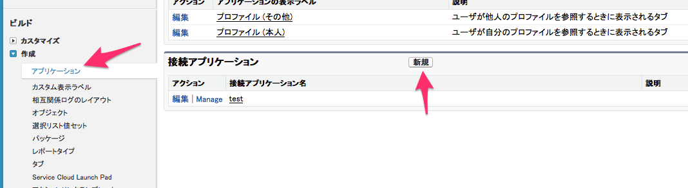
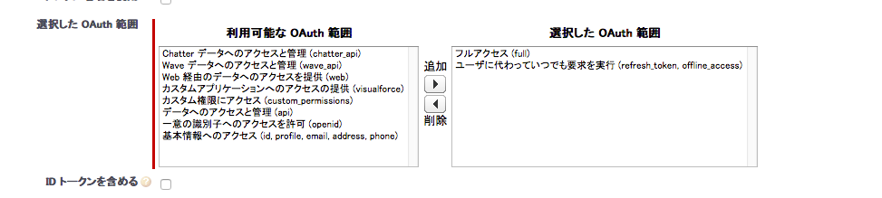

SalesforceのRest API を呼ぶ
REST API
SalesforceはOAuth2の認証を使ってAPIを呼ぶことができる。
今回はそれを試したいと思う。
参考にしたのはこれ。
Force.com REST API 開発者ガイド
準備
Salesforce 開発者 からサインアップすると、無料の開発エディションが使用できる。
ログインしたら、設定からアプリケーションを選択し、最下部にある接続アプリケーションの新規ボタンをクリック。

接続アプリケーション名などは適当に入力。
OAuth設定の有効化にチェック。コールバックURLは環境に合わせて設定。今回はhttp://localhost:8080/とした。
選択したOAuth範囲は、「フルアクセス」と「ユーザに代わっていつでも要求を実行」の２つ。後者がないとRefresh Tokenを取得できない。

これで保存。
保存後、コンシューマ鍵とコンシューマの秘密の2つをコピーしておく。
Go言語で実装
Go言語で実装していく。
まず、認証のEndpointだが、上記pdfによると、以下の2つのようだ。
ただし、sandbox環境の場合は、loginの箇所をtestにする。
- 認証 https://login.salesforce.com/services/oauth2/authorize
- Token要求 https://login.salesforce.com/services/oauth2/token
そして、APIを呼ぶ際のEndpointは以下である。
xxxの箇所には各自ログインしたときのSalesforceのアドレスと同じものが入る。例えばap4など。
手順としては認証用のURLを作り、コールバック用に指定したlocalhost:8080でサーバを起動しておく。
URLにアクセスすると、ユーザに確認が求められ、承認するとリダイレクトされる。
リダイレクト時にcodeが付与されているので、これを使用し、トークンを手に入れられる。
トークンを手に入れたら、APIを呼ぶことができるが、今回はAccountに新しいレコードを追加してみる。
以上の手順のソースが以下である。
package main
import (
"bytes"
"fmt"
"io/ioutil"
"log"
"net/http"
"golang.org/x/oauth2"
)
var conf *oauth2.Config
const (
ClientId = "xxxxxxxxxxx" //コンシューマ鍵
ClientSecret = "xxxxxxxxxxx" //コンシューマの秘密
AuthURL = "https://login.salesforce.com/services/oauth2/authorize"
TokenURL = "https://login.salesforce.com/services/oauth2/token"
RedirectURL = "http://localhost:8080/"
ApiURL = "https://xxx.salesforce.com/services/data/v38.0/"
)
func main() {
conf = &oauth2.Config{
ClientID: ClientId,
ClientSecret: ClientSecret,
Endpoint: oauth2.Endpoint{
AuthURL: AuthURL,
TokenURL: TokenURL,
},
RedirectURL: RedirectURL,
}
url := conf.AuthCodeURL("")
fmt.Println(url)
http.HandleFunc("/", handler)
http.ListenAndServe(":8080", nil)
}
func handler(w http.ResponseWriter, r *http.Request) {
code := r.FormValue("code")
fmt.Println(code)
token, err := conf.Exchange(oauth2.NoContext, code)
if err != nil {
log.Fatal("exchange error", err.Error())
return
}
client := conf.Client(oauth2.NoContext, token)
jsonStr := `{"Name" : "John"}`
req, err := http.NewRequest("POST", ApiURL+"sobjects/Account", bytes.NewBuffer([]byte(jsonStr)))
if err != nil {
log.Fatal(err.Error())
}
req.Header.Set("Content-Type", "application/json")
resp, err := client.Do(req)
if err != nil {
log.Fatal(err.Error())
}
body, _ := ioutil.ReadAll(resp.Body)
defer resp.Body.Close()
println(string(body))
}
上記実行し、Account(取引先)に名前がJohnの新しいレコードが作られるのを確認できた。